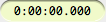
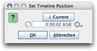

The current timelime position represents the insertion point for paste operations, as well as the starting location for playback. During playback, the timeline position moves along the timeline, so there is no separation between insertion cursor and playhead pointer in Eisenkraut. However, unchecking the "Timeline Insertion follows Playback" setting available in the Operation menu makes it possible to return to the original insertion point when playback stops.
The timeline position is displayed as a thin vertical red line in the document frame. The exact position is displayed in text format next to the transport controls:
The format of this label is determined by the Time Units setting chosen in the View menu. By clicking on this text label, the Go-to-Time dialog pops up (keyboard shortcut G):
In this dialog, the time units can be switched from the popup menu accessible from the right side of the number field. Pressing the "Current" button will place the current timeline position in the number field. This makes it easy nudge by exactly N seconds for example.